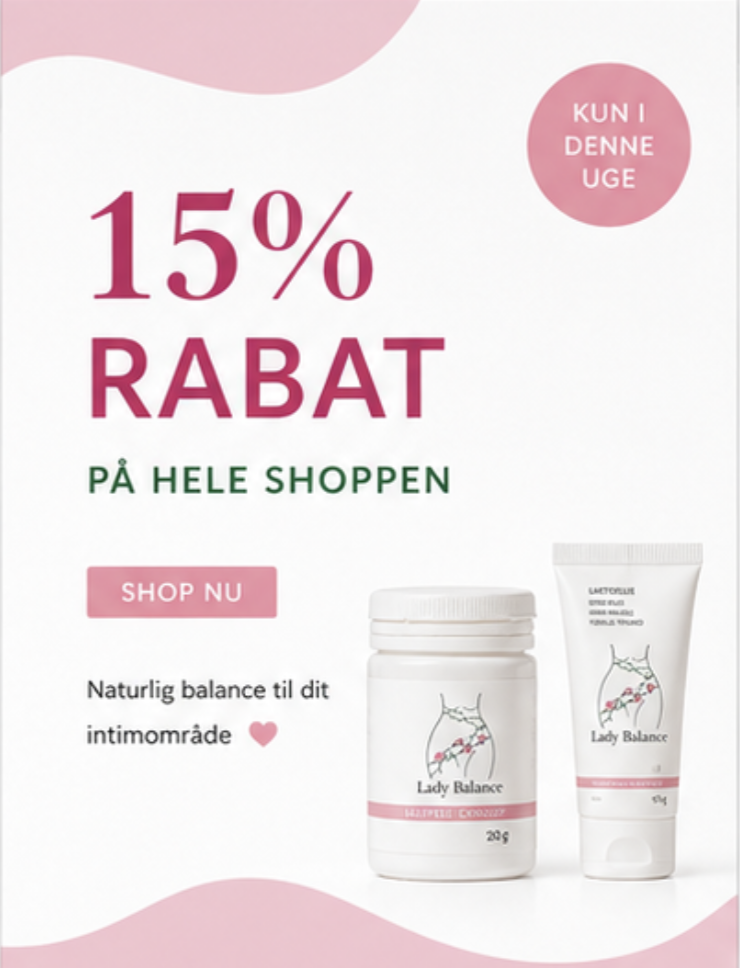
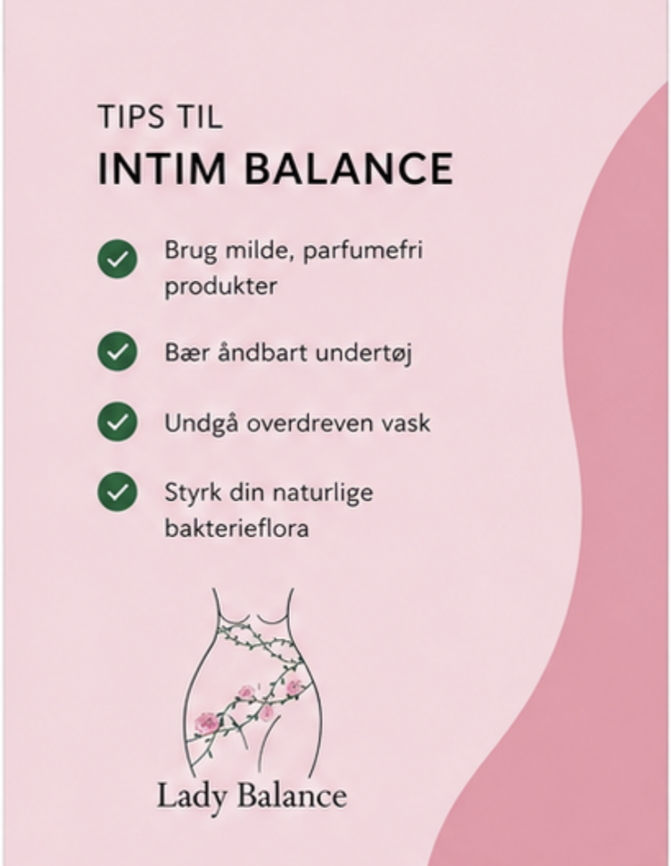
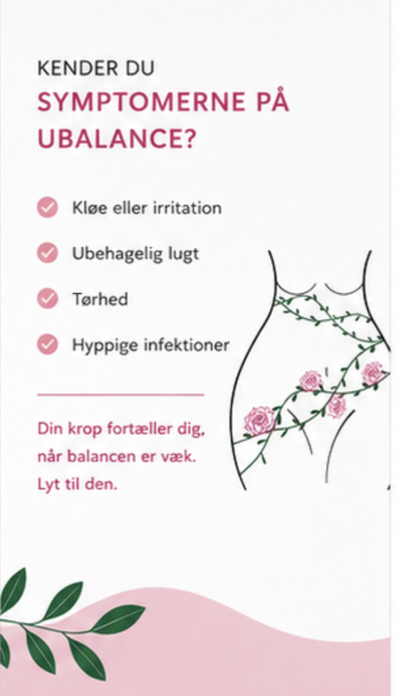
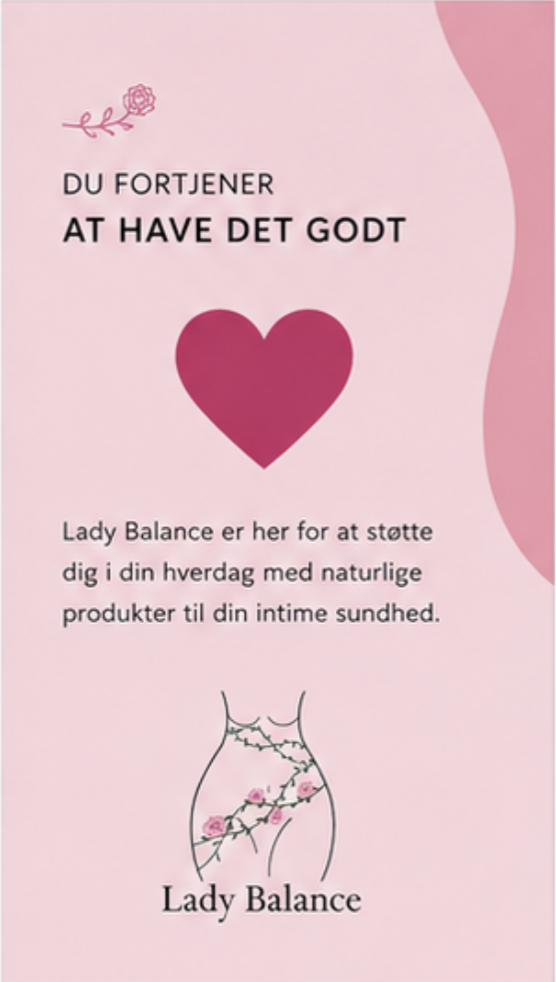
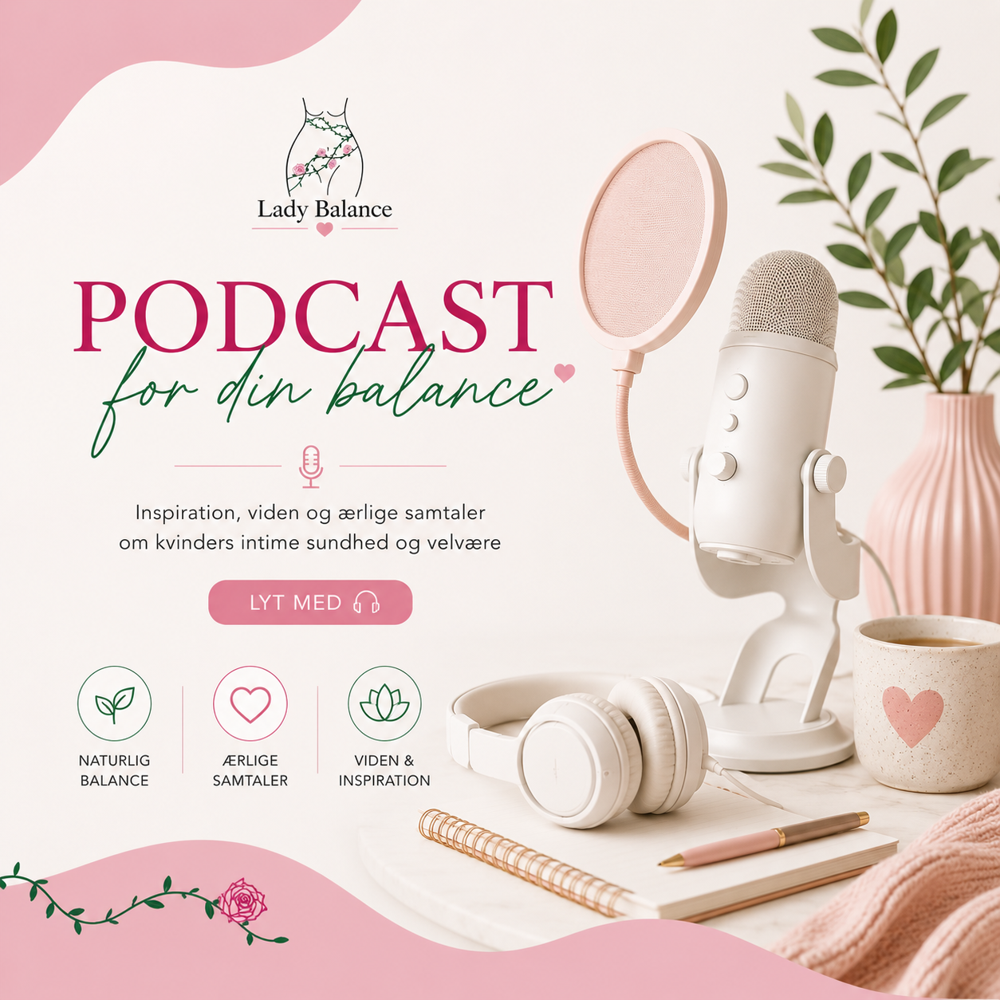
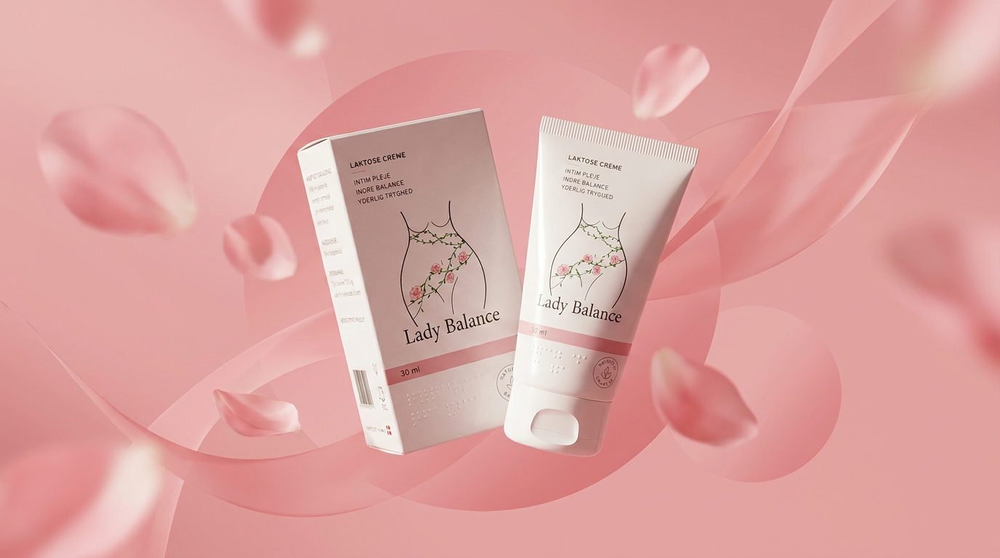
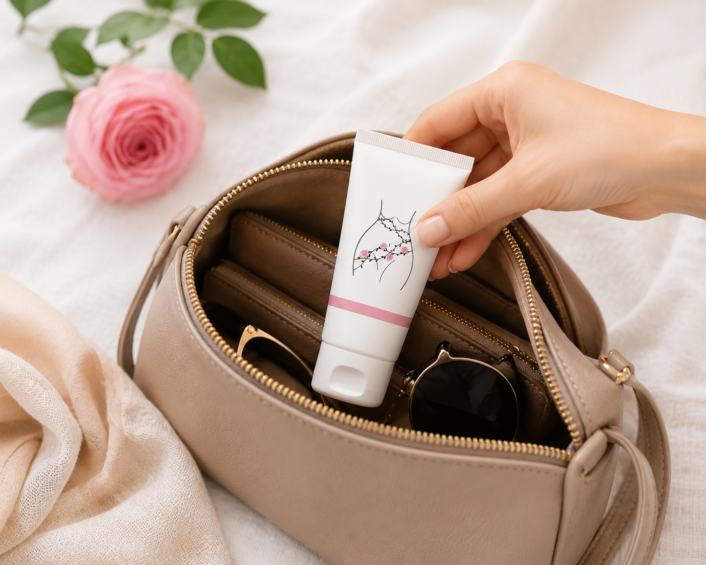
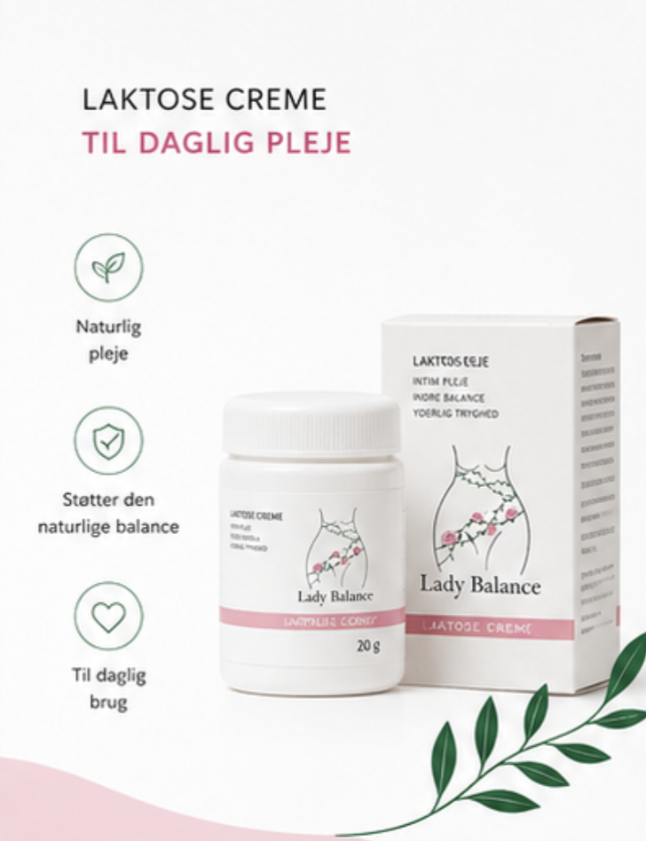

Intim Balance til Kvinder
Naturlig pleje, der understøtter en sund pH-balance og vaginal flora Se produkterne


Hvorfor vælge Lady Balance til intim pH-balance
 Hjælper med at genoprette den naturlige pH-balance i underlivet
Hjælper med at genoprette den naturlige pH-balance i underlivet
Understøtter en sund vaginal flora med mælkesyrebakterier
Kan reducere symptomer på intim ubalance
Nem og skånsom intimpleje til daglig brug
Udviklet af dansk forsker
Kan købes på apoteket
Indeholder Laktose
Parfume og parabenefri
Populære Varer
Skabt til at virke 4.8 - 126 reviews
4.8 - 126 reviews
Intimtabletter til pH-balance og vaginal flora
Læs mere om produktet
105.00 kr
 4.8 - 126 reviews
4.8 - 126 reviews
Intimcreme mod tørhed og irritation i underlivet
Læs mere om produktet
100.00 kr
 4.8 - 126 reviews
4.8 - 126 reviews
Intimtabletter til daglig støtte af intim balance
Læs mere om produktet
135.00 kr


Hvorfor lugter mit underliv? De mest almindelige årsager
Dårlig lugt fra skeden eller lugt i underlivet er en af de hyppigste grunde til, at kvinder søger information og finder frem til LadyBalance. Mange oplever fiskeagtig eller ammoniak lugt fra skeden, andre beskriver det som lugtende underliv eller salmiak-lugt fra skeden. Læs mere
22-10-2026 1200 visning

Hvordan hjælper mælkesyrebakterier med at beskytte skeden?
Bakterier i skedens mikroflora har genetisk potentiale til at danne en hidtil ukendt type antibiotika Læs mere
22-10-2026 1200 visning

Hvad er celleforandringer i livmoderhalsen?
Undersøgelsen viser, at mange kvinder med CIN2 får det bedre uden kirurgisk indgreb, når kroppen selv får lov at arbejde. Læs mere
22-10-2026 1200 visning
Få svar om intimplejeprodukter
FAQNormal pH-balance i skeden ligger typisk mellem 3,8 og 4,5. Det sure miljø hjælper med at beskytte mod bakterier og svamp. Hos kvinder efter overgangsalderen kan pH være lidt højere
Tørhed i skeden skyldes ofte lavt østrogenniveau, fx ved overgangsalder, amning eller stress. Det kan også skyldes medicin, hormonforandringer eller irritation fra sæbe og intimprodukter.
Ja, mælkesyrebakterier kan hjælpe med at genoprette og vedligeholde en sund intim balance ved at støtte den naturlige pH-værdi i skeden.
Dårlig lugt fra underlivet kan skyldes ubalance i bakterierne. God intimhygiejne, undgå stærk sæbe og eventuelt mælkesyrebakterier kan hjælpe. Ved vedvarende lugt bør man kontakte læge.
Ja, stress kan påvirke kroppens hormonbalance og dermed også den naturlige balance i underlivet.
Man bør kontakte læge ved vedvarende kløe, svie, stærk lugt eller usædvanligt udflåd




Følg os
Hold dig opdateret




Hvad Kunder siger
Læs hvad andre siger om deres behandlingsrejse“Jeg har prøvet mange produkter mod tørhed og irritation, men Lady Balance Creme er den første, der faktisk føles mild og beroligende uden parfume.”
“Jeg bestilte kosttilskuddet til hormonel balance, og jeg er positivt overrasket over både kvaliteten og den hurtige levering. Webshoppen var nem at bruge, og alt føltes meget professionelt.”
“Det bedste ved Lady Balance er, at produkterne føles naturlige og feminine uden at være for kliniske. Emballagen er smuk, og kundeservicen svarede hurtigt på mine spørgsmål.”
“Super god oplevelse med LadyBalance. Hurtig levering og rigtig venlig kundeservice, der svarede hurtigt på mine spørgsmål. Alt kom diskret og fint pakket.”
“Jeg købte vaginal-tabletterne efter anbefaling fra en veninde. Produkterne gav mig mere tryghed i hverdagen, og jeg elsker at brandet fokuserer på kvinders velvære på en elegant måde.”
“PH-testen fra Lady Balance gjorde det meget nemmere for mig at forstå min balance og vælge de rigtige produkter. Super enkel at bruge og virkelig flot pakket ind.”
"Jeg har været rigtig glad for LadyBalance. Produkterne er nemme at bruge og giver mig en god følelse af komfort og balance i hverdagen"